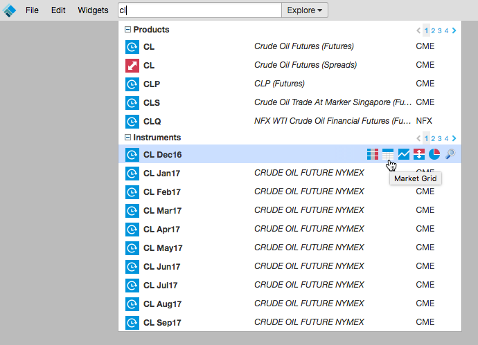
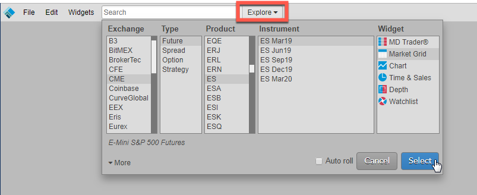
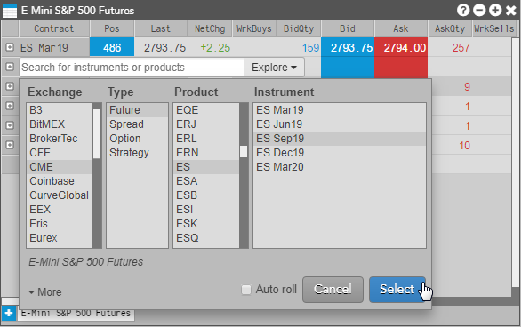

You can use Search or Market Explorer to add instruments to a new or existing Market Grid widget.
Using Search to launch a Market Grid
To use search to launch a Market Grid:
Enter an exchange, product type, product, symbol, or instrument name in the
Search box in the workspace title bar.
Tip: You can also enter keywords to search for an instrument (e.g., natural gas, soybeans, oil, etc.).
Hover over the product name or instrument name to view a list of widgets that you can open and click the Market Grid icon.

Using Market Explorer to launch a Market Grid
Click Explore next to the Search box in the title bar.
Select an exchange, product type, product, and instrument, and click Market Grid in the Widgets
section.
Tip: Use Shift-click to select multiple instruments for a product, or just select the product to open all instruments for that product.

Check the Auto Roll checkbox to automatically roll the instrument after its expiry.
Click Select.
The Market Grid opens populated with market data for the selected instrument.
Adding instruments to an existing Market Grid
To add instruments to an existing Market Grid:
-
Double-click any row within an existing tab in a Market Grid.
Clicking on a row that is already populated will insert a new row above that instrument. Clicking on the blank row after the last instrument will add instruments to the bottom of the grid.

-
Use Search or Explore to add one or more instruments to the Market Grid. If you choose a product, all of the instruments available for the product are added to the Market Grid.

The selected instruments are added to the Market Grid.

Changing an instrument in a Market Grid
To change an existing instrument in a Market Grid:
-
Right-click on the instrument you want change and select Change instrument from the context menu to open the Market Explorer.

-
In the Market Explorer, locate the desired instrument and click Select.
The selected instrument replaces the existing instrument in the Market Grid.